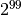

Maximum path sum II¶
Problem 67
By starting at the top of the triangle below and moving to adjacent numbers on the row below, the maximum total from top to bottom is 23.
3 7 5 2 4 6 8 5 9 3
That is, 3 + 7 + 4 + 9 = 23.
Find the maximum total from top to bottom in triangle.txt (right click and ‘Save Link/Target As...’), a 15K text file containing a triangle with one-hundred rows.
NOTE: This is a much more difficult version of Maximum path sum I. It is not possible to try every route to solve this problem, as there are  altogether! If you could check one trillion 10.0E12 routes every second it would take over twenty billion years to check them all. There is an efficient algorithm to solve it. ;o)
Solution
Use the euler18.pathUp() function/
from euler18 import pathUp
import urllib.request
Compute the answer.
def answer():
# "http://projecteuler.net/project/triangle.txt"
triangle_text= urllib.request.urlopen( "file:triangle.txt" ).read().decode("ASCII")
t100 = [ list(map(int, x.split())) for x in triangle_text.strip().splitlines() ]
assert len(t100) == 100
return pathUp( t100 )
Confirm the answer.
def confirm(answer):
assert 7273 == answer, "{0!r} Incorrect".format(ans)
Create some output.
if __name__ == "__main__":
ans= answer()
confirm(ans)
print( "The maximum total from top to bottom of the given triangle:", ans)